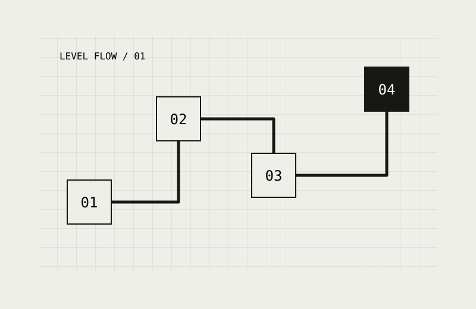

04 / SEVİYE TASARIMI · YENİ DENEME
Bir seviyenin ritmi.
Öğret. Denet. Bir adım daha ileri taşı.

Aşamayı seç, tasarım notunu oku.
Karşılama
Oyuncu güvenli bir alanda hareket eder. Çıkış yönü görünürdür; henüz süre veya düşman baskısı yoktur.
Bu şema portfolyo için hazırlanmış yeni bir tasarım denemesidir. Geçmiş ders teslimi veya oynanabilir tam bir seviye değildir.